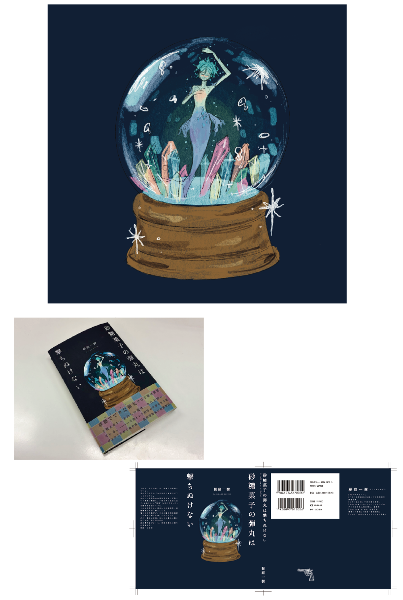

WORKS
作品
装丁デザイン
本のカバー、帯をデザインする

[制作期間] 3週間
[制作ソフト] Illustrator・Procreate
イラストレーションの授業の課題で、小説「砂糖菓子の弾丸は撃ちぬけない」の装丁デザインを制作しました。
作品全体に漂う静かでミステリアスな雰囲気を表現するため、暗い紺色を背景にスノードームをモチーフとして用いました。
イラストはProcreateで描画し、神秘的でどこか儚い世界観が伝わるよう、色彩や質感を工夫しました。
あえて筆のタッチを残すことで、デジタルで描きながらも手描きならではの温かみや揺らぎを感じられる表現を目指しました。
カバーはマット紙を採用し、海の底のような重厚感を演出しました。帯にはトレーシングペーパーを使用しています。